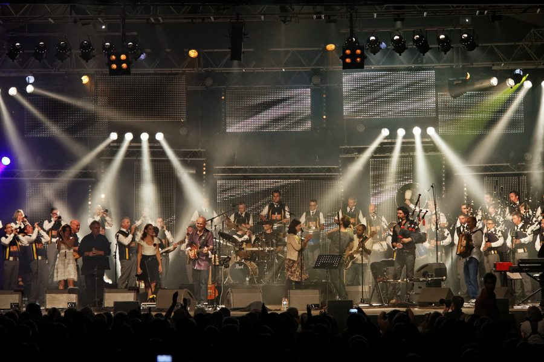
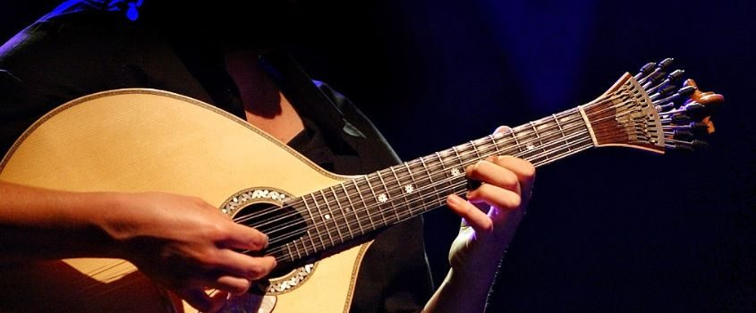
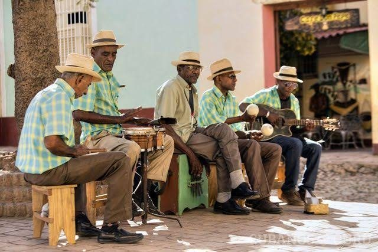
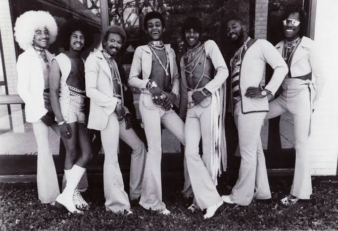
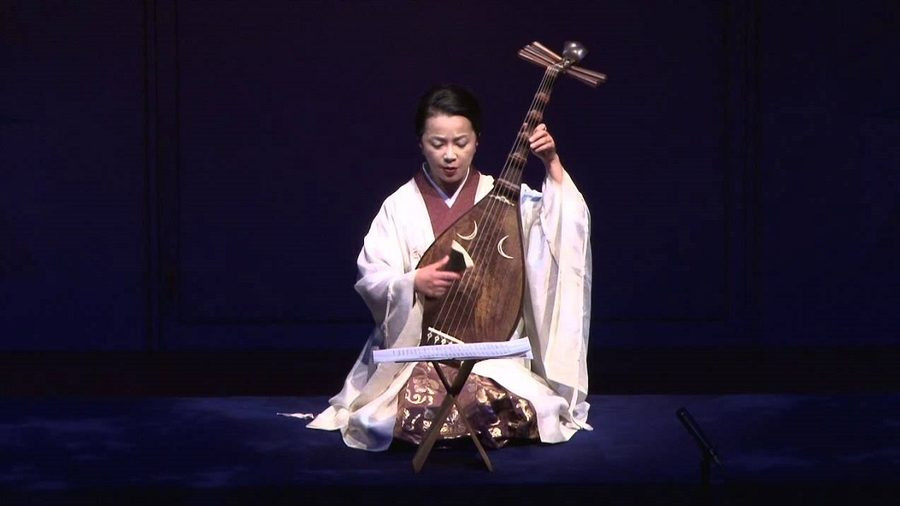
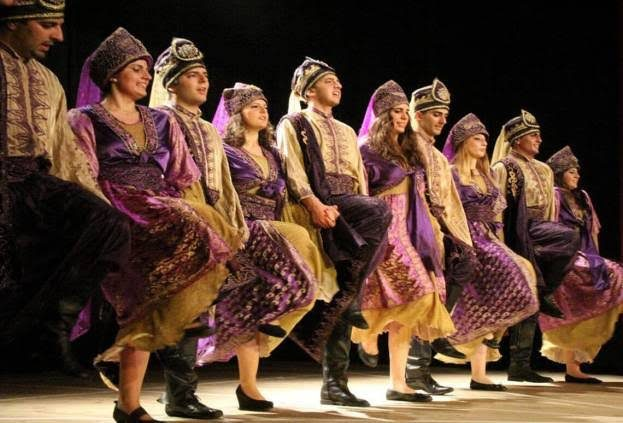
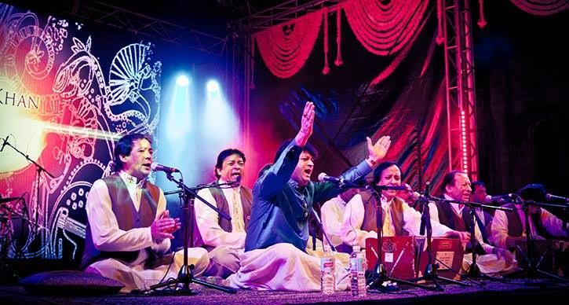
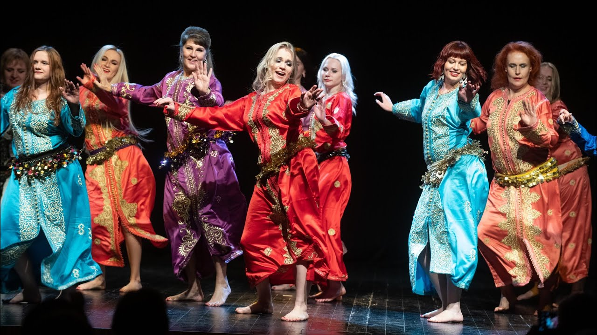
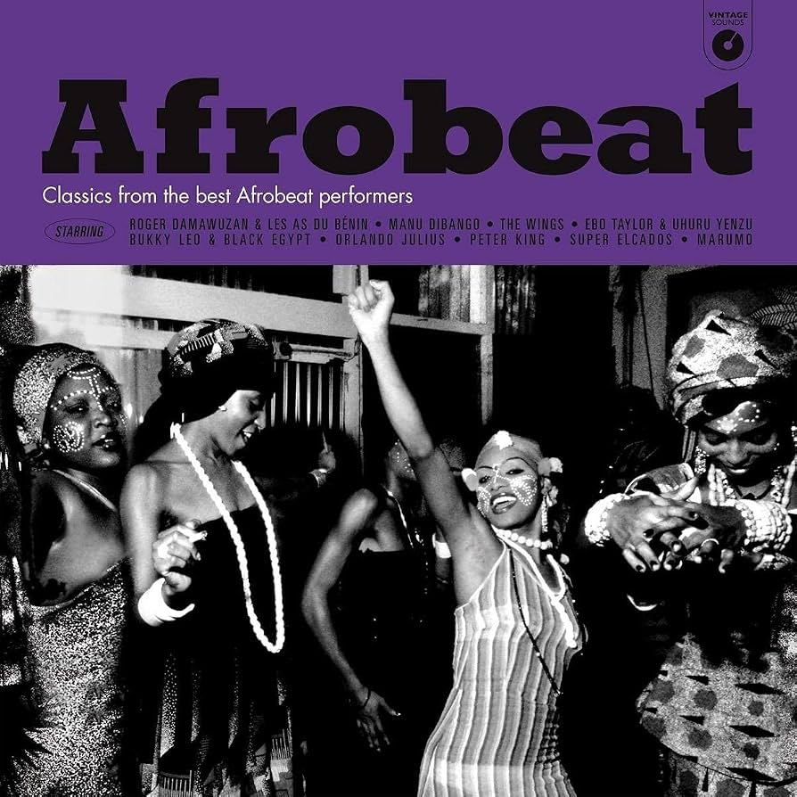
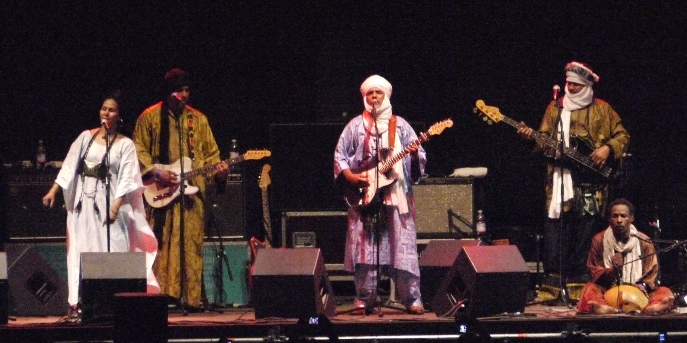

España
El flamenco nació en Andalucía y se construye con el compás, el quejío y las palmas. Cada región tiene además sus propias tradiciones.
Del flamenco al tango, de la samba al reggae, del sitar al taiko: un recorrido breve por la música de diferentes países, con sus estilos, instrumentos y palabras clave.
Empezar el recorrido
El flamenco nació en Andalucía y se construye con el compás, el quejío y las palmas. Cada región tiene además sus propias tradiciones.

Del punk y el heavy metal británicos al folk celta irlandés, con su bodhrán y su gaita.
La chanson francesa y el acordeón de los bailes populares marcan el sonido de París.
La ópera y el bel canto nacieron aquí; la mandolina acompaña serenatas y canzoni.

El fado se canta con guitarra portuguesa y habla de la nostalgia.
Rammstein es una banda de metal industrial originaria de Alemania.

El mariachi reúne trompetas, violines, vihuela y guitarrón, y sirve a la ranchera y al corrido.

El tango nació en el Río de la Plata y tiene en el bandoneón su instrumento símbolo. Aquí conviven milonga, folclore y murga.
La samba y la bossa nova son dos caras de una misma riqueza rítmica, con la batucada como pulso del carnaval.

La salsa nace del son cubano, y la clave es el patrón rítmico que ordena toda la música caribeña.
El reggae evolucionó del ska y el rocksteady; el sound system y el dub cambiaron la forma de producir música.

El jazz, el blues y el gospel son la raíz de buena parte de la música popular: soul, funk, rock and roll y hip-hop.

La música clásica se organiza en raga y tala, con el sitar y la tabla como voces destacadas. El Bollywood y el bhangra la llevan a la pista de baile.

Del gagaku cortesano y el taiko al J-pop actual, con el koto y el shamisen como cuerdas tradicionales.
El erhu y el guzheng representan la tradición china; el pansori y el K-pop, la coreana.

El makam organiza la melodía, y el oud, el ney, el kanun y la darbuka dan color a la música árabe y otomana.
Su estilo se define principalmente como pop operístico o classical crossover, aunque mezcla con naturalidad ópera, pop

En la música occidental, el qawwali se asemeja principalmente al góspel y al flamenco, aunque también comparte rasgos con la música electrónica.

El chaabi es el género musical más festivo, popular y bailable de Marruecos
Su sonido nace de mezclar la percusión tradicional del pueblo wólof con estilos modernos como el funk, el jazz, el soul y lasalsa

Es una fusión explosiva de música tradicional yoruba, highlife, jazz, funk y soul, famosa tanto por su ritmo hipnótico e imparable como por sus letras de protesta política y social.

Es una fusión hipnótica de los cantos tradicionales tuareg y mandinga con guitarras eléctricas envolventes, famosa tanto por su cadencia pausada como por sus letras sobre el desierto, la nostalgia y la libertad.
Es una mezcla envolvente de deep house, jazz y ritmos tradicionales kwaito, famosa mundialmente por sus melodías suaves de piano eléctrico y sus graves profundos que invitan al baile.
Es una fusión fascinante de escalas tradicionales etíopes con jazz estadounidense, funk y ritmos latinos, famosa por su atmósfera nostálgica, hipnótica y el protagonismo de los instrumentos de viento.